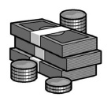

MAAŞIM KAÇ LİRA
Geçen ay fazla mesai dahil 130 lira aldım. Maaşım, fazla mesai ek ücretimden 100 lira fazladır. Acaba maaşım kaç liradır?
Cevap:
Birçok kişi düşünmeden hemen “100 lira” diye yanıtlar. Fakat maaşınız 100 lira, fazla mesai ücretiniz de 30 lira ise aradaki fark 70’tir. O halde bu cevap yanlış. Şöyle düşünmemiz gerek:
Fazla mesai ücretinize 100 lira katarsak maaşınızı veriyor.
130 lira = 1 maaş + fazla mesai ücreti 130 + 100 lira = 1 maaş + fazla mesai ücreti + 100 lira Son iki terimin toplamı 1 maaş olduğundan; 230 lira = 1 maaş + 1 maaş
Yani 1 maaş = 115 lira, fazla mesainiz ise 15 lira ve aradaki fark da 100 lira.
